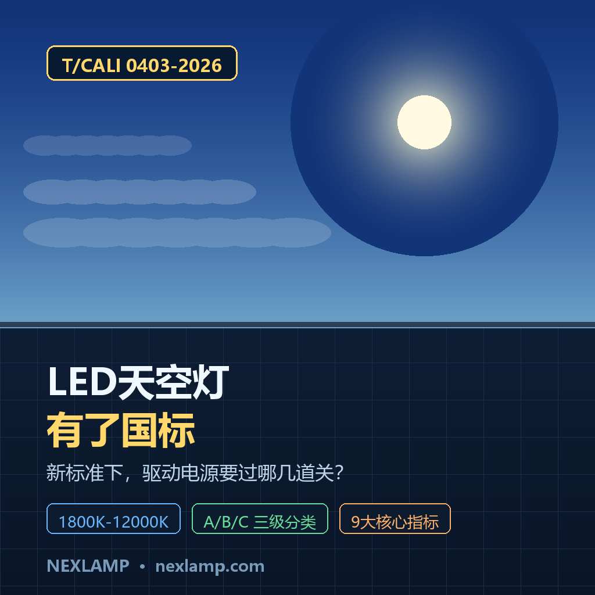
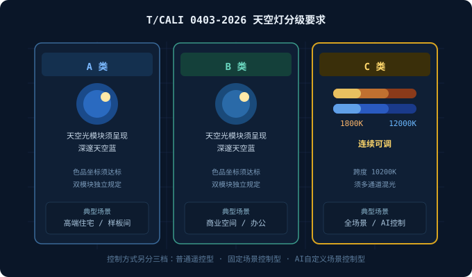
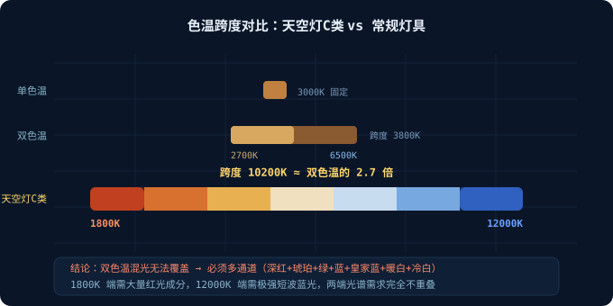
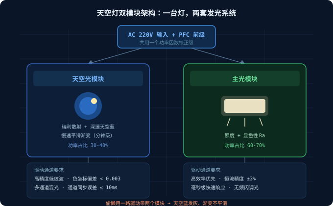

2026年8月6日，兰州。
中国照明电器协会「2026中国照明电器行业标准质量大会」上，一份文件正式落地——《模拟天空光的LED灯具》T/CALI 0403-2026。
这是国内首部针对「LED天空灯」这个品类的团体标准，由佛山照明牵头制定。
如果你还不知道天空灯是什么：它是装在天花板上、能模拟真实天空效果的灯具。地下室、无窗房间、内走廊装上一块，抬头是深邃的天空蓝，色温还能从清晨到傍晚连续变化。
这两年天空灯在小红书上火得很快，但一直有个尴尬：没标准，全靠厂家自己吹。
同样叫「天空灯」，有的能做出真实的瑞利散射效果，有的就是一块蓝色亚克力板加LED灯珠。价格从几百到上万，消费者根本没法判断。
新标准把这件事定死了。今天从驱动电源的角度，讲清楚这份标准背后的三道技术门槛。
一、标准怎么分类：A/B/C三档，各有各的硬骨头
T/CALI 0403-2026 按光色呈现效果把天空灯分成三类：

| 类别 | 核心要求 | 典型场景 |
|---|---|---|
| A类 | 天空光模块须呈现深邃天空蓝 | 高端住宅、样板间 |
| B类 | 天空光模块须呈现深邃天空蓝 | 商业空间、办公 |
| C类 | 额定色温 1800K~12000K 连续可调 | 全场景、AI控制 |
同时按控制方式分成三档：
- 普通遥控型
- 固定场景控制型
- AI自定义场景控制型
标准还规定了安全、光学、电气、可靠性四个维度的9大核心指标，配套试验方法和检验规则。
注意 C 类那个数字：1800K 到 12000K。
这是整份标准里对驱动电源最狠的一条。
二、门槛一：1800K-12000K 超宽色温，驱动怎么做？
先给个参照：普通双色温调光灯具的范围是 2700K-6500K，跨度约 3800K。
天空灯 C 类要求的跨度是 10200K，接近前者的 3 倍。

这个跨度靠双色温（暖白+冷白）混光根本做不到。1800K 的烛光色需要大量红光成分，12000K 的天空蓝需要极强的短波蓝光——两端的光谱需求完全不重叠。
唯一可行的路径是多通道混光。
实际方案通常是 5 到 7 个通道：
- 深红（660nm 附近）——撑住 1800K 低色温端
- 琥珀/橙（590-610nm）——补齐暖光过渡
- 绿（520nm）——提升显色性
- 蓝（450nm）——高色温端主力
- 皇家蓝/紫（410-440nm）——12000K 冷端和天空蓝效果
- 暖白 + 冷白——提供基础照度
这对驱动电源意味着什么？
每一路都要独立恒流、独立调光，而且通道间的电流精度必须严格同步。
举个具体的坑：从 4000K 平滑过渡到 8000K 的过程中，蓝光通道电流要上升、红光通道要下降。如果两路驱动的响应速度不一致（比如蓝光快 50ms、红光慢 80ms），过渡中间会出现明显的色偏跳变——用户看到的不是"天色渐变"，而是"灯闪了一下"。
高端天空灯驱动的通道同步误差需要控制在 10ms 以内，恒流精度 ±1% 以内。
三、门槛二：天空光模块 + 主光模块，双系统并行
标准里有个容易被忽略的细节：A 类和 B 类灯具分别规定了天空光模块与主光模块的色品性能指标。
也就是说，一台合格的天空灯，其实是两套发光系统：

天空光模块负责视觉效果——通过瑞利散射材料（模拟大气对短波光的散射）呈现深邃的天空蓝，还要有"太阳"的高亮光斑。
主光模块负责功能照明——提供房间实际需要的照度和显色性。
这两套系统对驱动的要求完全不同：
| 维度 | 天空光模块 | 主光模块 |
|---|---|---|
| 核心指标 | 色品坐标准确度 | 照度 + 显色性 Ra |
| 调光需求 | 慢速平滑渐变（分钟级） | 快速响应（毫秒级） |
| 功率占比 | 30-40% | 60-70% |
| 精度要求 | 色坐标偏差 < 0.003 | 恒流精度 ±3% |
驱动电源要在同一块板上同时满足这两套完全不同的要求。
实际工程中的做法是分区供电：天空光模块走高精度低纹波通道（保证色坐标稳定），主光模块走高效率通道（保证光效不吃亏）。两者共用一个 PFC 前级，后级独立。
如果厂家偷懒，用一路驱动带两个模块，结果就是天空蓝发灰、渐变不平滑——这也是市面上便宜天空灯普遍的问题所在。
四、门槛三：AI场景控制型，驱动要能"听懂"指令
标准把控制方式分成三档，最高一档是 AI自定义场景控制型。
这不是营销词，是标准里明确的分类。
对驱动的要求是：
- 必须支持数字协议通信（DALI DT8 / Zigbee / Matter 等），能接收色温、亮度、场景 ID 等参数
- 必须内置场景插值算法——上位机给出"日出场景，60分钟"，驱动要自己算出这 60 分钟里每一秒各通道的电流值
- 必须支持参数存储——断网/断电重启后能恢复到上次场景，不能变成一块白板
佛山照明的 FSL-天空灯用的是自研的瑞利散射技术 + 健康节律算法 + 智能混光系统三件套。算法跑在哪里？一部分在网关，一部分就在驱动的 MCU 里。
这就是我一直说的：LED驱动电源正在从"电源"变成"带电源功能的控制器"。
天空灯是这个趋势的极端案例——一台高端天空灯的驱动板上，MCU 的成本占比可能超过功率器件。
五、选型建议：天空灯项目怎么挑驱动
如果你在做天空灯产品或工程项目，选驱动时重点看这 5 项：
| 指标 | 及格线 | 优秀线 |
|---|---|---|
| 独立通道数 | 4路 | ≥6路 |
| 恒流精度 | ±3% | ±1% |
| 通道同步误差 | 50ms | ≤10ms |
| 调光深度 | 1% | 0.1% |
| 数字协议 | 单一协议 | DALI DT8 + 无线双支持 |
另外提醒三个容易踩的坑：
坑一：低亮度频闪。 天空灯经常需要工作在很低的亮度（比如模拟夜空），纯 PWM 调光在 1% 以下容易出现可见频闪。要选 PWM+模拟混合调光的方案。
坑二：热设计被低估。 多通道集成意味着驱动板上元件密度高，而天空灯通常是嵌入式安装、散热空间受限。温度漂移会直接吃掉你的色坐标精度。
坑三：只看色温范围不看色坐标。 有厂家标"1800K-12000K"，但实际色坐标偏离黑体轨迹很远——数字达标，视觉效果不达标。要求供应商提供全色温段的色坐标实测数据。
六、结语：标准落地才是行业的真正起点
《模拟天空光的LED灯具》T/CALI 0403-2026 的意义，不在于它有多严格，而在于它终结了"人人自称天空灯"的混战。
标准还特别增设了「典型应用场景示例」和「典型天空光效果示例」两个资料性附录，用直观示例展示产品效果——这是很务实的做法，让检测机构和消费者都能对得上。
对我们做驱动电源的来说，这份标准传递的信号很清楚：
天空灯不是灯具外观创新，是驱动+算法的系统工程。
1800K-12000K 的连续可调、双模块并行、AI 场景控制——这三件事任何一件做不好，产品都过不了标准。
对经销商和工程商来说，从现在开始有了明确的问话方式：
"你的产品是标准里的 A 类、B 类还是 C 类？"
"C 类的话，1800K 和 12000K 两端的色坐标实测数据能提供吗？"
"驱动是几路独立输出？通道同步误差多少？"
这三个问题能筛掉市面上大半的"假天空灯"。
参考资料
- 中国照明电器协会：《模拟天空光的LED灯具》T/CALI 0403-2026，2026年8月6日发布
- 2026（第二届）中国照明电器行业标准质量大会（兰州）
- 佛山照明：FSL-天空灯产品矩阵及标准宣贯资料
- 中国轻工业联合会《升级和创新消费品指南（轻工第十二批）》